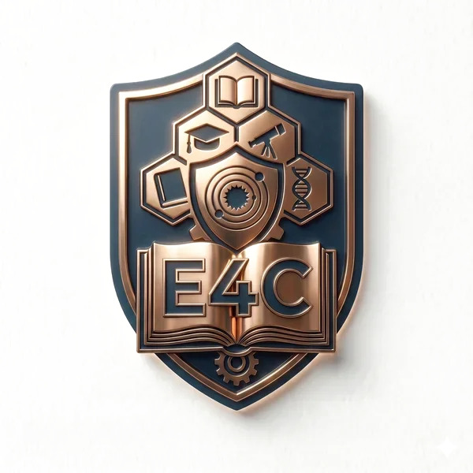

Impacto
Hitos de Arquitectura

E4C: Infraestructura Tecnológica de Triple Impacto
Arquitectura Web3 sin Fricción
- Diseñé e implementé el motor de liquidación automatizada B2B de E4C utilizando **Stellar Disbursement Platform (SDP)**.
- Procesamiento programático instantáneo de pagos en stablecoins (**USDC**) a partners comerciales (cines, librerías) en el momento del canje.
- Integración de abstracción de cuentas mediante **Pollar SDK**, permitiendo el onboarding seguro de menores a través de su Gmail escolar institucional.
- Logro de fricción cripto cero y cumplimiento estricto de normativas de protección de datos digitales.
Inteligencia Artificial en el Aula
- Desarrollé un asistente de IA **privacy-first** orientado a la automatización pedagógica.
- Procesamiento del dictado en lenguaje natural de los docentes de forma segura y estructurada.
- Traducción de registros orales en pipelines de datos limpios para alimentar las métricas de presentismo en la blockchain.
- Eliminación del 100% de la carga administrativa manual del docente para el registro del presentismo.
Validación Institucional y Gubernamental
- Dirección técnica y defensa estratégica del protocolo ante aceleradoras internacionales del ecosistema.
- Participación activa en el programa **Track Scale - Código Alebrije** en la Ciudad de México.
- Presentación e impulso de la viabilidad de la plataforma ante legisladores de la Ciudad de Buenos Aires.
- Declaración del proyecto E4C de **interés tecnológico y educativo** por la legislatura.
NewsChain (Truth Tech Initiative)
- Creador de la arquitectura descentralizada para la trazabilidad y prueba de autenticidad en el periodismo digital.
- Implementación de capas de inmutabilidad robustas para el registro de procedencia de la información.
- Garantía de integridad de datos editoriales frente a la manipulación o alteración de registros históricos.
- Arquitectura previa load-bearing que sirvió como base para los sistemas de inmutabilidad actuales de E4C.

Stellar House México
Presentación de la arquitectura descentralizada de E4C y contratos inteligentes Soroban ante la comunidad regional.

Ronda de Inversores en CDMX
Pitch estratégico y defensa de tracción del protocolo en el programa Track Scale - Código Alebrije.

Congreso de Educación
Exposición ante legisladores y pedagogos sobre el incentivo inmutable para variables de presentismo escolar.

Presentación en WIP Club
Validación de la integración de Stellar Disbursement Platform (SDP) con partners comerciales del ecosistema.
Presentación Institucional E4C
Demostración práctica del funcionamiento de la arquitectura Web3 y el impacto social del protocolo.